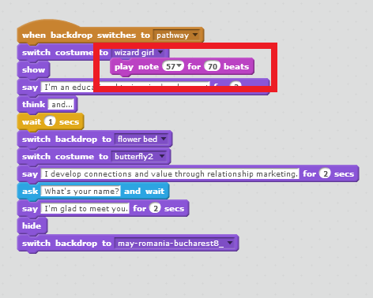
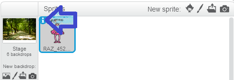
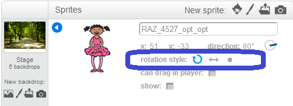

femartinez
Hi, can anyone help with scratch? I created one but now it doesn't appear. I have all my movements saved but when I click nothing happens. Thank you. Fernanda


Hi, can anyone help with scratch? I created one but now it doesn't appear. I have all my movements saved but when I click nothing happens. Thank you. Fernanda

Hey Fernanda,
Can you clarify what you mean by "when I click nothing happens"? When you click what?

@femartinez you could share your project (click on Share) and post here the link; so we can have a look and give help
@katherine when I click at the movements on the right, nothing appears on the letf box (the one I was seeing the avatar moving). I made a sequence and tested it and it was ok, but suddenly the images disapeared (when I changed backdrops, but I've erased it and it still doens't appear). Thanks for your help.
@CyberParra Here: http://scratch.mit.edu/projects/19814341/ Nothign appears. But the movements are saved there. Very strange.
@femartinez Remember that you have to tell Scratch everything that you want it to do. So for instance, if you want it to show your sprite, you have to tell it to do so. Check out the blocks in the "Looks" tab.
You also might consider adding a "When green flag clicked" block to your code (from the "Events" tab). That way, every time the green flag is clicked to start your project, you can specify exactly what you want to happen!
@femartinez
Katherine has given you the best suggestions to tinkering by yourself.
So, now your sprite has disappeared and is outside the screen. My suggestion is to add after an event block as katherine said, the block that says where the sprite has to go/stay at the beginning 
I think this picture could help (where is your sprite and more...)

Great to see you tinkering and drawing your own costumes with Scratch!
You may want to try clicking the block, and see if it re-appears.

Fernanda, I add some commands to your project. If you see inside (the script) I also add some comment banners to each line to explain you what I did. It's basic stuff so you can go on on your nice job - very good start! Since I remixed your project, you can now find a new version (remix) on my Scratch page.
http://scratch.mit.edu/projects/19932917/#player
(After you see it I can delete it from my page)
Open it, go inside to see the script the changes, please. You have any more questions, feel free to ask! Good job!

Hello!How do I know if someone received my Scratch because I ´ve already shared it ??It´s the first time I did this
You don't need to know. When your project is shared all Scratch community can see it.
Of course only people who follow you will be notified that you have shared something.
To check if you have shared a project you have several ways:
1) go inside the project page: if you don't see the SHARE button on the upper right, it means that the project is already shared
2) click on MyStuff button on the top; then a menù appears on the left regarding all your projects. Click on Shared Project
Obrigada, Heloisa. Você tinha conseguido visualizar o meu anterior? Eu até agora não consigo e não sei editar... MAs vi o remix que você fez. Thanks!
Eu vi o anterior sim, Fernanda. E percebi onde estava dando errado. Para editar seu script:
1- vai na tua pagina e no teu projeto
2- click para carrega-lo
3- click "see inside" numa tab a direita, em cima. Ele abrira entao o seu progrAma, vc vera o seu script e podera edita-lo.
Será q é isso q vc nao ta conseguindo? Tenta ai e me fala, ta?

Hello!
I'm also working with Scratch for the first time and I would appreciate your help.
I did my project, but there are some bugs that I don't know how to fix.
Here's the link: http://scratch.mit.edu/projects/20641917/
As you can see, what the sprite says appears too far away.
Please give me some suggestions.
Thank you.

@cristina_apopei
I really like your project! I see neat bonus content if you press the right arrow. First, I looked at your code to see if the "say" command was placed on the sprite you were trying to get to talk. I didn't see any problems there, but enjoyed looking through your code. However, I did find what might be a sneaky piece of code that has jumped off of its home in one of your sprites, it is a command to play a note (shown in pic). Since it does not have an event command or custom command to control it, it won't play unless someone clicks to see inside, finds it, and clicks on it to get it to play. If you want it to play with your intro somewhere, try just dragging it into place. Sometimes, I have had code jump out of my code when I am editing it and sometimes I have forgotten to put code back in I took out to edit other code. This isn't causing your issue, but maybe this help if you meant for the note to play:

For the life of me, I couldn't figure out what was causing this. I began to suspect you had found some wild bug. Then, I remembered an issue I got once where the movement of one of my sprites seemed off. It turned out, I had accidentally left in some graphics on the far edge of the sprite. When Scratch tried to estimate my sprite's costume's size and shape it used any graphics on the far edge in part to reference.
Scratch will try to figure out the size and shape of your sprite based on the outermost pixels that are not transparent and will take such into account when doing things like center of rotation for a sprite, where text bubbles should appear, where the boundaries of the sprite are when touching other things, etc.
It looks like you might have accidentally clicked in the top left of your sprite's costume at one point when editing it. There is a tiny black square of some sneaky pixels in your image. You wouldn't believe how many times I have accidentally clicked pixels into my costumes and had things like this happen. If you edit your costume, you can erase them out and it should fix it! I tried it and it worked for me, but you seem like you can handle it so I didn't remix it. Keep us updated if you have more trouble or need more help:
Nice project, again!
Thank you for the feedback and attention to the code behind my project. I'm glad you like it.
I've put that piece of code back where I wanted it (in the 3rd segment). I remember that I moved it because once I inserted the sound, the words that my sprite was supposed to say, disappeared. It's like the code gets cut off.
I've put the sound there hoping that someone can give me an idea why it doesn't work.
Regarding the first sprite, I've taken care of that black square. It would have taken ages to notice it.
I really appreciate your support.
Ah hah! I see what you mean! The sound happens, but then the words don't appear.
At least, not for a verrrrrry long time. The words actually do come up if you wait long enough.
Maybe try experimenting with how many beats the note should play. Right now you have it set for 70 beats.
I made a beat estimation program for us, it will let you enter in a number of beats to estimate about how long your note will last:
http://scratch.mit.edu/projects/20743374/
It uses the trumpet sound, which will play continuously. Some instruments, like the piano, taper off after a couple seconds and it isn't audibly noticeable the note is still "playing."
Hope this helps!
Eureka! Now I understand. At first it seemed to be such a short sound so I thought to make it longer. But not that long. 
I've tried the program you created and I can definitely hear how long the sound is.
Now I've set a shorter sound and it all works ok in the video.
It's getting better and better.
I just have to figure out how to make my sprite come back each time in standing position on the spot (see the ballerina) and it's completed.
Thank you for such prompt reply and solution.
No problem, glad to help! This has been a learning experience for me, too. I had not stopped to think about how long a beat actually is in Scratch and now I know. Looks like 1 beat = 1 second!
I think there are probably a number of ways to get your ballerina to do what you want. I bet if you take a look at the blue motion blocks in the script that involves the ballerina you will figure out a solution. Don't be afraid to experiment and try different things out!
I'm glad it was a learning experience for you too. 
Thank you for the encouragement. I've experimented a little with the ballerina and I think it's getting better.
I'm all for experimenting. Scratch is really making me more and more curious about what I can create.
I am glad you are having fun experimenting with Scratch and the different things you can create.
I hope this is not intrusive, but I have a couple tips:
Unless an action is something like "say X for 2 seconds," "play note 55 for 3 beats," etc., a piece of code in a script will try to happen instantly before moving to the next piece of code. If you try to put a couple of pieces of code that rotate or move a sprite one right after the other, it will happen so fast that you probably won't even see it. There are a multiple ways to cause a delay or make Scratch wait if you want to do something like simulate animation. I do not know how you would like to explore the ballerina's behavior in your project, but if you are trying to do something like make her spin maybe there is a way you can find to get her sprite to change more slowly. Also, when you rotate a sprite like your code is doing, it matters what the rotation type of that sprite is. There are a couple of ways to do this.
You can use the "set rotation style" block in the blue movement section:
And you can also change the main rotation for a sprite in the sprite info box by clicking the little blue "i" icon in the top of the sprite's image in the lefthand panel that shows all sprites in your project:


As is, the ballerina tries to rotate in a circle. This can be changed to only rotate left-to-right. There are different ways to "rotate" a sprite such as using the "turn x degrees" code, "point in direction x" code, etc.
I bet if you play around more with it you will get it how you like it.
Good luck!
Hello James!
Here I am with more energy after the Easter holiday. Hope you had a pleasant time!
Thank you for the details. They are really useful and the more specific you are, the easier it is for me to spot where the issue is.
I tested the options and I think there are many movements and rotations the sprite can do. Just trying to slow them down at this point so we can see them clearly.
The temptation to test all kind of options in Scratch is a great one.
I really appreciate your support.
Have a great day!
{kind=link}
{kind=link}